国・地域の見分け方
- ドメインは.ro
- 公用語はルーマニア語でラテン文字を使用する
- 電柱の一番下に穴が空いていることが多く黄色のマーカーが付いていることがある(by Geotips )
- 「Ș・ș」・「Ț・ț」はルーマニアとモルドバで使用される
- ルーマニアのガードレールは角ばっていない
- ヨーロッパの中で圧倒的に太い▽の標識がある
- 家の前に何か箱があって黄色いパイプが伸びている
- ひまわりの種の生産が多く周辺のセルビア・ウクライナ・ブルガリア・ハンガリーもルーマニアに近いエリアでひまわりの畑が多い気がするヨーロッパの農業分布
見つかる標識
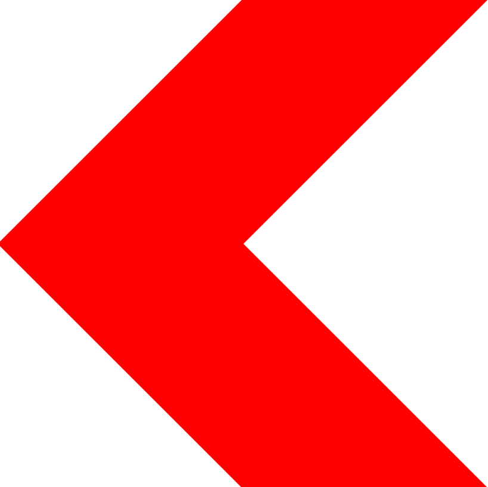
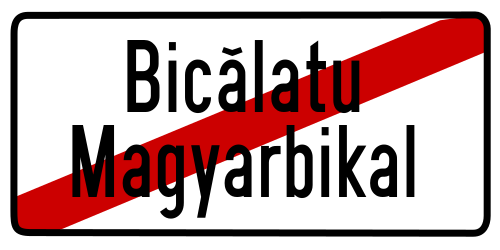
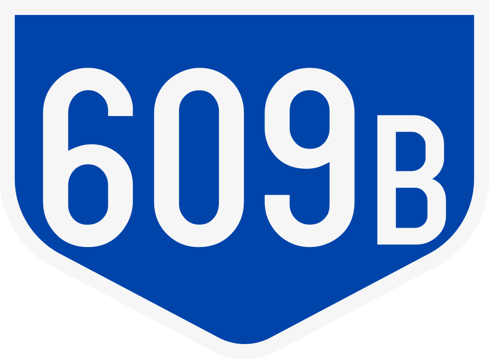
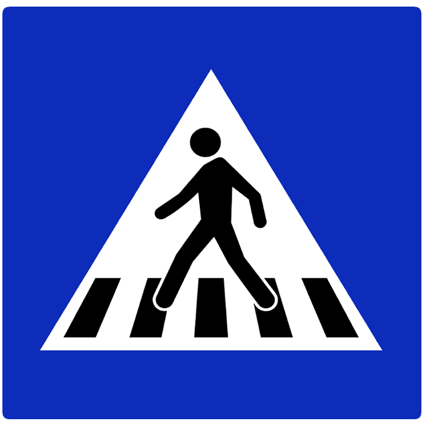
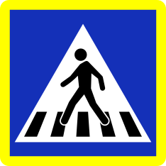
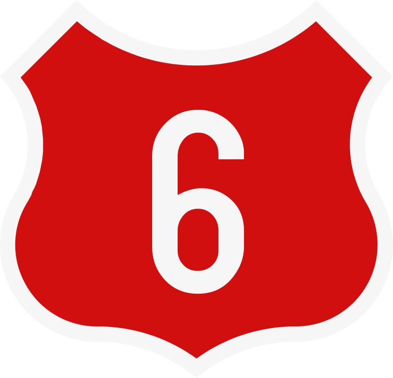
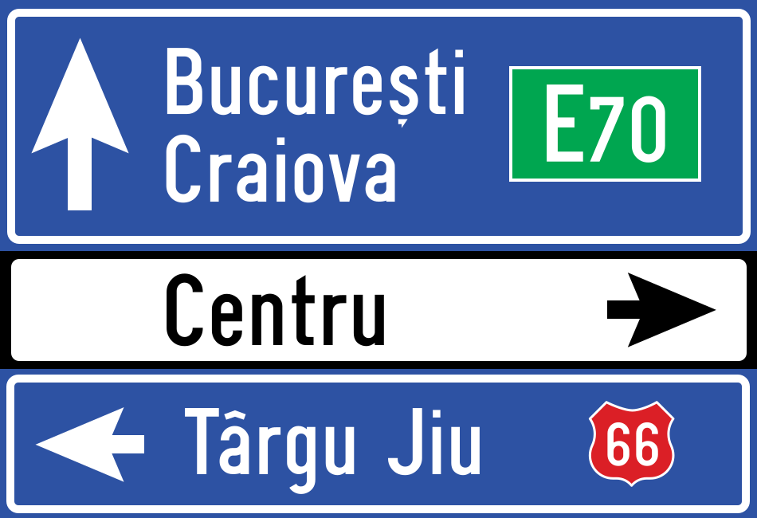
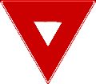
横断歩道標識：By Gigillo83 - Own work, CC BY-SA 4.0, Link
電柱に大き目の穴が一番下まで空いていることが多いが一番下が片面だけ埋まって見えることもある。一番下まで空いていたらルーマニアかハンガリー、一番下が空いていなかったらポーランドかも。黄色いマーカーが付いていることが多い。
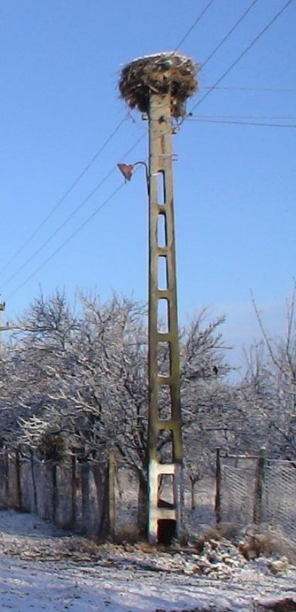

ヨーロッパの中で圧倒的に太い▽。左から順番に一番細いポーランド、まあまあ太いと思われるフランス、そしてルーマニア(参考文献 Comparison of European road signs)。
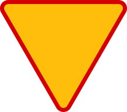
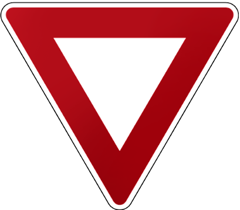
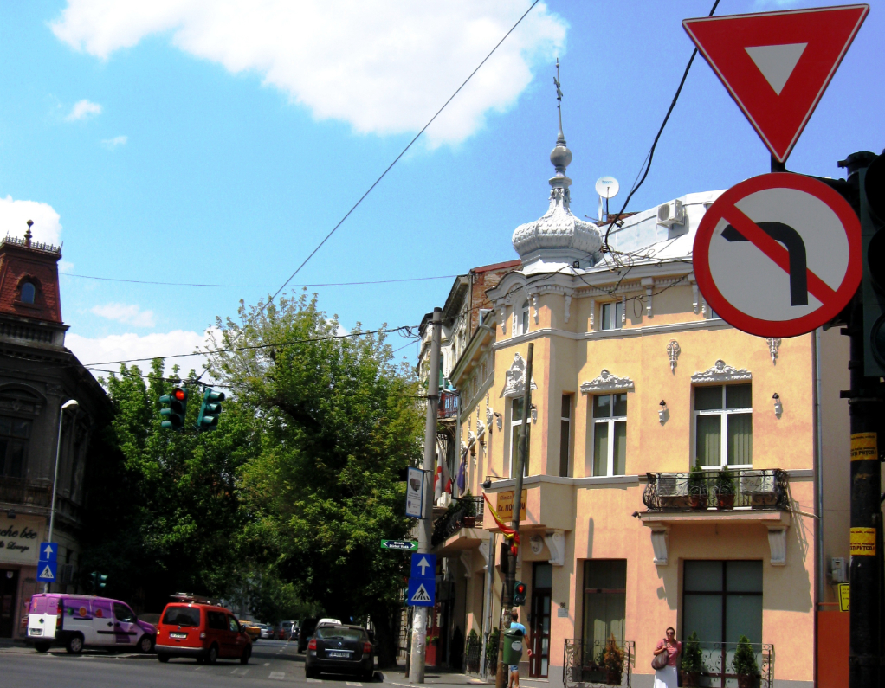
ルーマニアのボラードは場所を特定するためのヒントが多い画像出典。ちっちゃいバージョンもある。
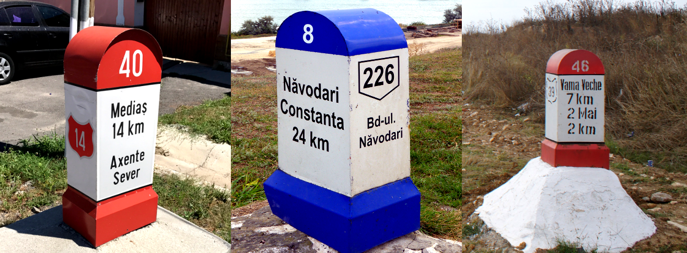
「Ș・ș」・「Ț・ț」のような下に点（コンマビロー）が付いたSとTはルーマニアとモルドバで使用されるが、モルドバにはストリートビューがない。「Ļ・ļ」ならばラトビア。
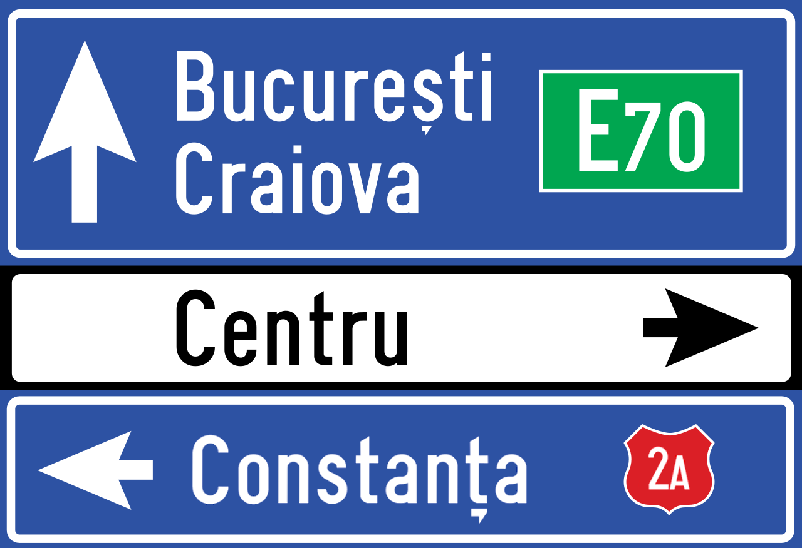
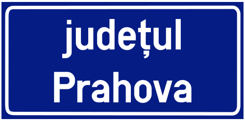
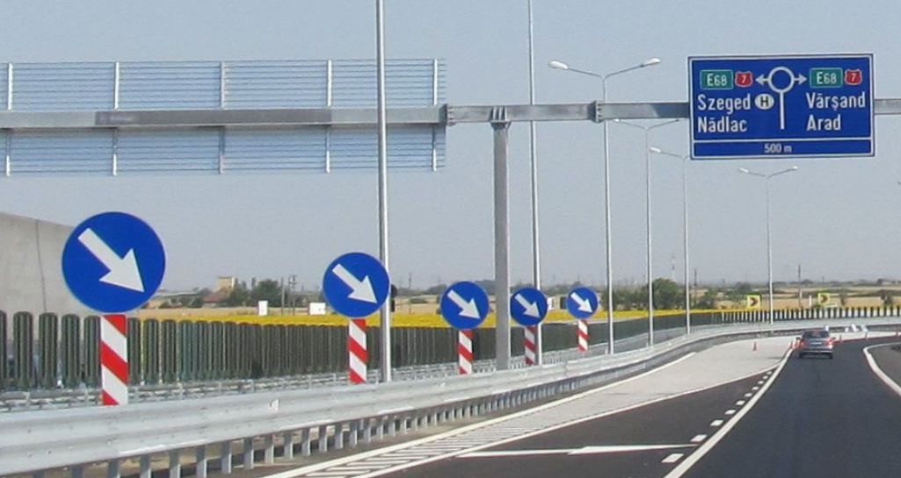
By Nenea hartia - Own work, CC BY-SA 4.0, Link
周辺国と違い標識に縁がない。青い看板や四角い看板も同様。
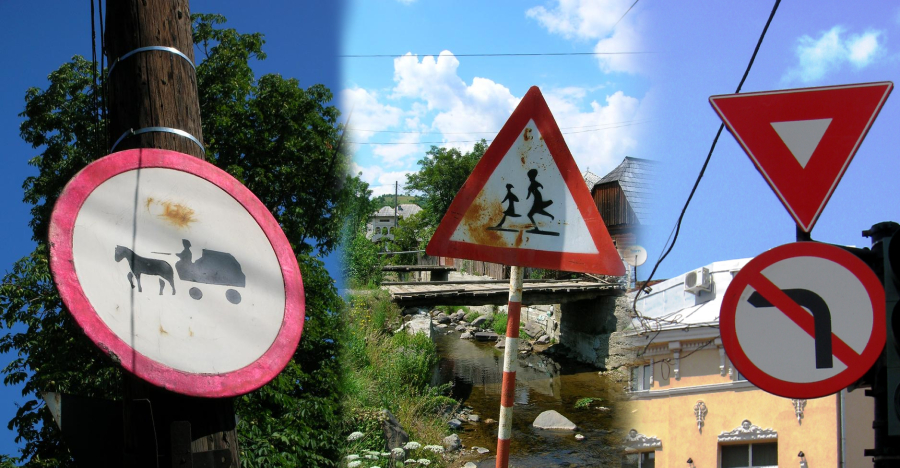
左がポーランド、右がルーマニアのガードレール。ポーランドのガードレールは角ばっているが、ルーマニアは角ばっていないことが多い(参考文献 European Guardrails)。
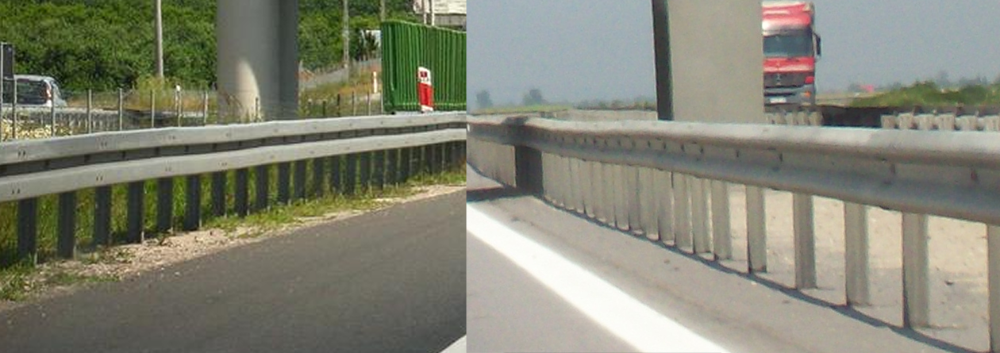
数は少ないがトルコやイタリアに似たボラードも見つかる。
州・地域の絞り込み
- ざっくりと北西にむかうほど裕福で地方ごとに伝統的な家がある(参考文献 Romanian architecture)(参考文献 Roofing in Romania, Part II: Past as Prologue)
- 北西■■：オレンジの屋根が多く山脈より北西は他よりも裕福なエリア
- 北東■：ウクライナのような雰囲気がある
- 南■■■：首都近辺以外はブルガリアのような雰囲気
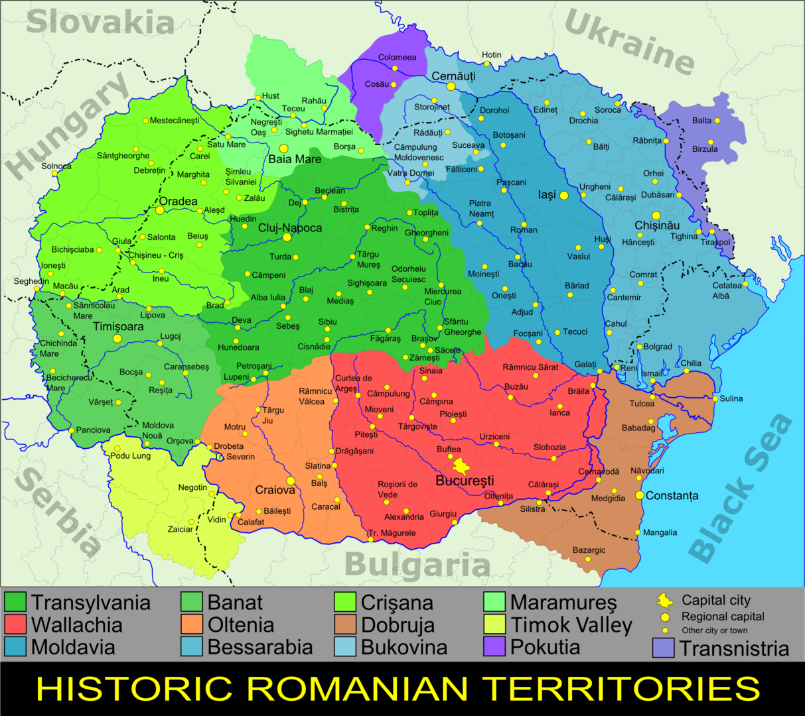
紫の地域ほどトイレが屋外にある。一般にはトイレが屋内にある地域ほど裕福。
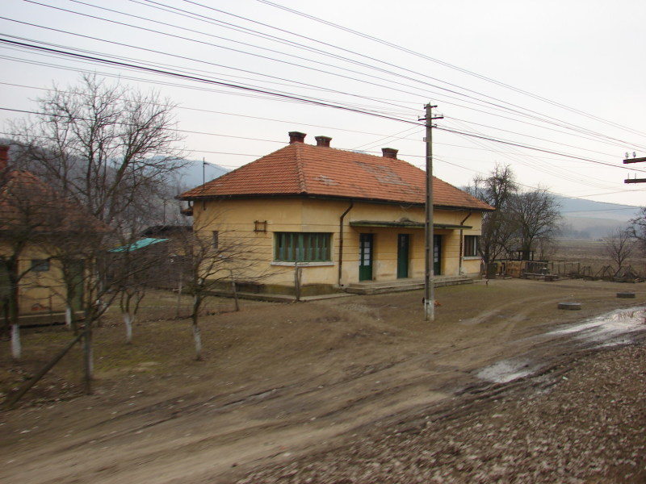
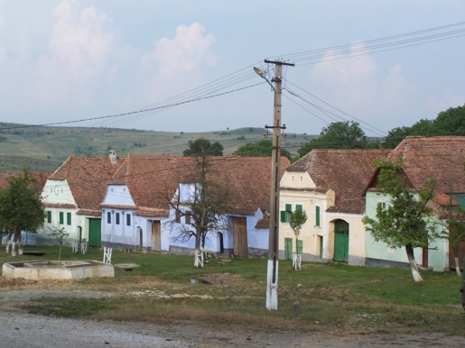
TODO / 赤茶色の屋根や水色の壁？(参考文献 トランシルヴァニア)。

{kind=link}
TODO / 銀色の素材の屋根やダクト(参考文献 32. to Bucovina)。
標高が高い部分が入り組んでいる（画像出典：https://maps-for-free.com/ ©Openstreetmap contributors）
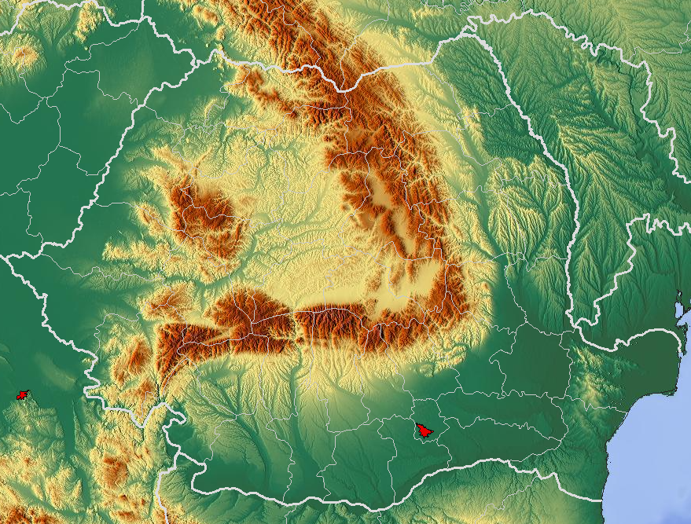
- 中央の山脈以外の地域には平坦な場所が多く農業がおこなわれている
- ヨーロッパの農業分布
- ひまわりは東側で多く栽培されている
- コーンや菜種はカララシ県の周辺のフラットな地域で多く栽培されている
- 一部の都市では石油が生産されており工業化が進んでいる
- ドナウ・デルタと呼ばれるヨーロッパの三角州エリアの間を船で移動する区間がある(参考文献 ドナウ・デルタ)
都市・町の絞り込み
- Transfăgărășanというファガラシュ山脈を越える道がある
- デケバルス王の彫刻がある(参考文献 Rock sculpture of Decebalus)
- 首都周りの環状線はボラードに「CB」と書いてある
画像出典
- By -wuppertaler - Own work, CC BY-SA 4.0, Link
- By Aisano - Self-photographed, CC BY-SA 4.0, Link
- By AleXXw - Own work, CC BY-SA 4.0, Link